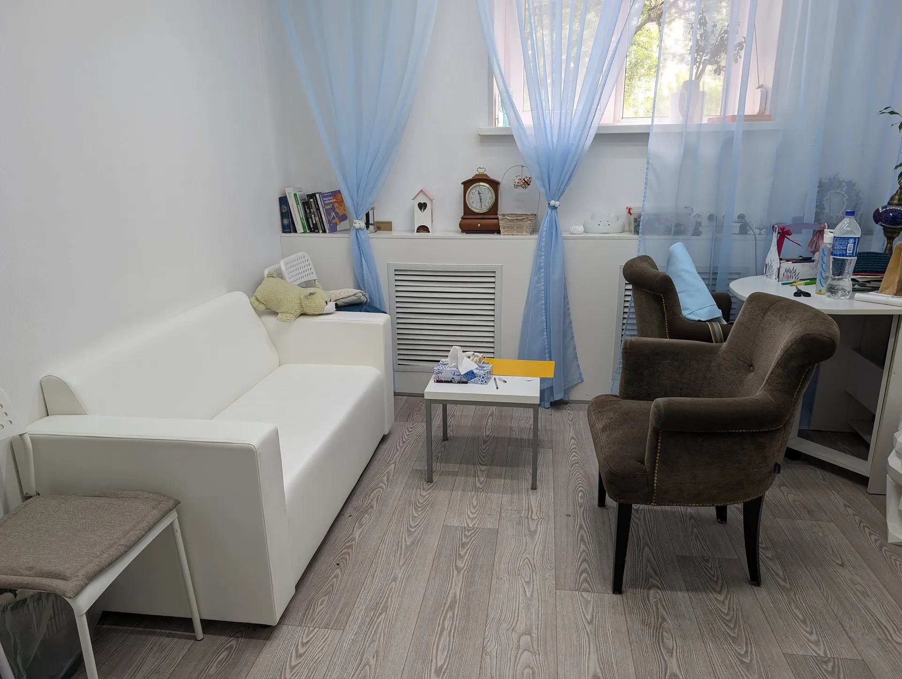
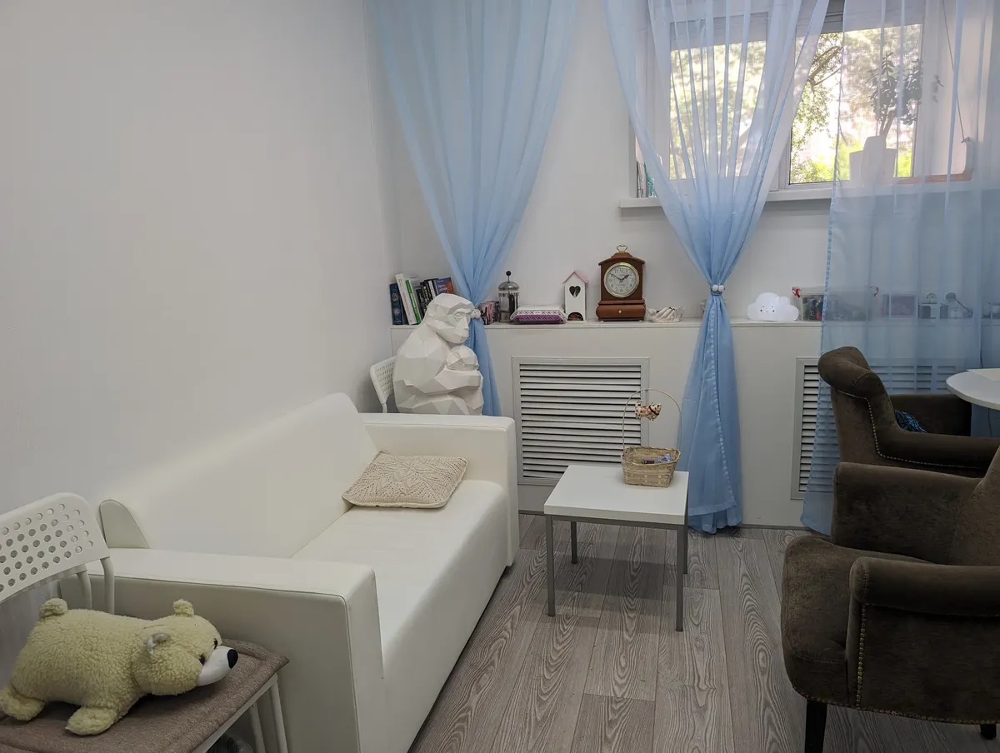
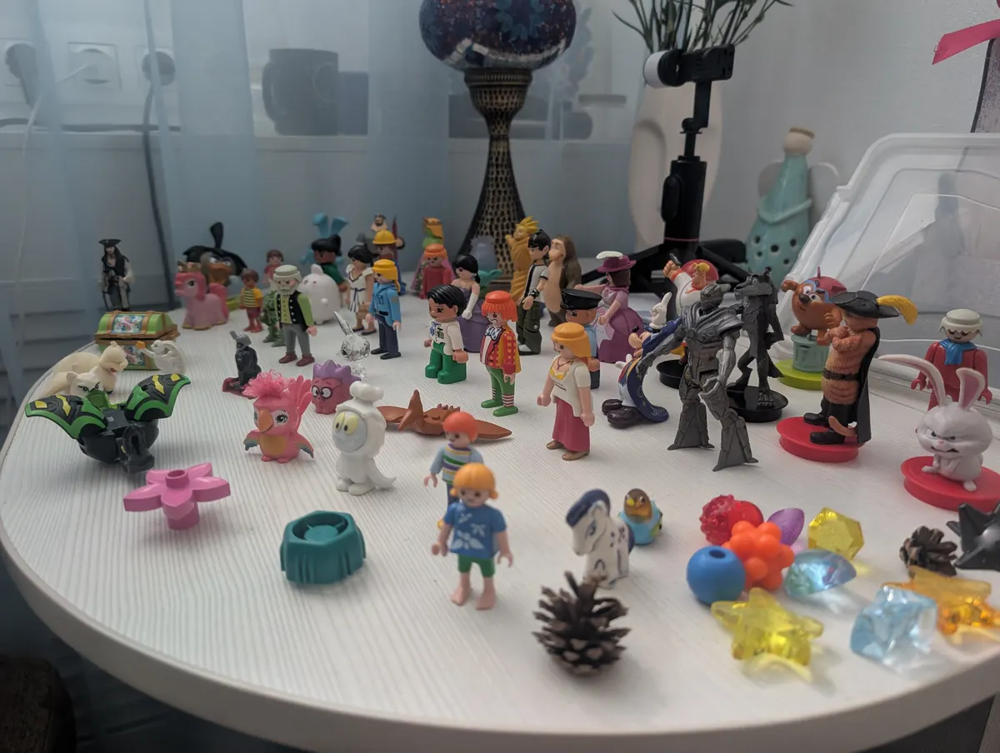
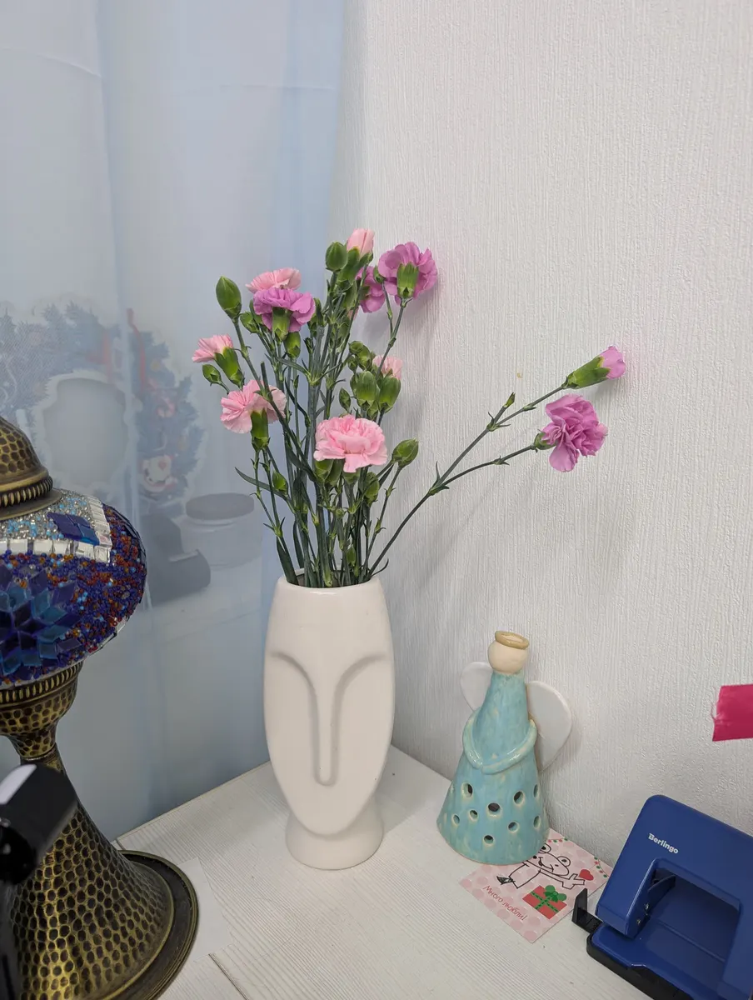

Психолог · очно и онлайн · Ижевск
Психолог в Ижевске: консультации очно и онлайн
Первичная консультация 75 минут, дальше краткосрочная или долгосрочная терапия по 60 минут. Профориентация и личные запросы.
- Очно в Ижевске или онлайн
- Первичная консультация 75 минут
- 5,0 на Яндекс.Картах

Консультации и цены
Формат очно или онлайн, цена одна.
Консультации
- Первичная или разовая консультация75 минут, очно или онлайн4 000 ₽
- Краткосрочная или долгосрочная терапия60 минут, очно или онлайн3 500 ₽
Цены взяты с карточки на Яндекс.Картах, обновлены 28 сентября.
Как проходит работа
- 01
Запись
Пишете в мессенджер, выбираете очно или онлайн и удобное время.
- 02
Первичная консультация
75 минут: знакомство и ваш запрос.
- 03
Терапия
Краткосрочная или долгосрочная, встречи по 60 минут.
- 04
Формат
Очно на Пушкинской, 192, или онлайн.



Что пишут клиенты
Внимательный и тактичный подход
Так пишут в отзывах: деликатный подход и комфортная беседа.
Профориентация и личные запросы
Работа и с выбором профессии, и с личными темами.
Уютное пространство
Светлый кабинет, где спокойно разговаривать.
Отзывы с Яндекс.Карт
«Очень внимательный и тактичный специалист, работали и в сфере профориентации и с личными запросами. Быстро находили решения. Рекомендую!»
Мария Б. · 20 апреля
«Спокойная доверительная беседа с классным специалистом в уютном пространстве. Результат от встречи порадовал)»
Мария Горбунова · 3 октября 2025
«Хороший специалист с которым комфортно обсуждать свою проблему. Деликатный подход.»
snegir2408 · 19 апреля
Отзывы с карточки на Яндекс.Картах.
Частые вопросы
С чем можно обратиться?
С чувствами и переживаниями: вина, обида, стыд, вспышки гнева. С горем и потерями: расставания, разводы, увольнения, переезды. С вопросами профориентации.
Как проходит первая встреча?
Первичная консультация длится 75 минут, очно или онлайн.
Сколько стоит?
Первичная или разовая консультация 4000 ₽, терапия по 60 минут 3500 ₽.
Где принимает?
Ижевск, Пушкинская ул., 192. Пн, вт, ср, чт, вс 10:00-20:00.
Запишитесь на консультацию
- Адрес
- Пушкинская ул., 192, Ижевск
- Часы
- пн, вт, ср, чт, вс 10:00-20:00
- Телефон
- +7 (912) 859-46-26